Shingle Roof & Deck Repair
Our crew opened the damaged area near the ridge, replaced a section of roof decking, and covered the patch with underlayment and new shingles.

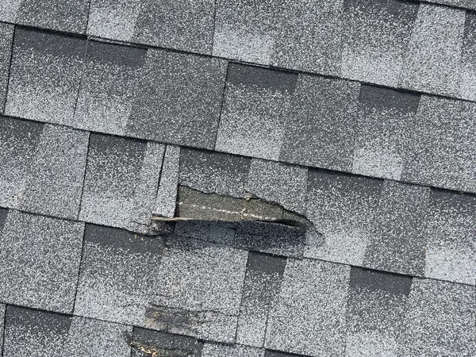


Follow a Shield Construction roof repair from start to finish, then explore photo examples of restoration work.
Our crew opened the damaged area near the ridge, replaced a section of roof decking, and covered the patch with underlayment and new shingles.

Examples of the roof deck, tear-off, and shingle installation.
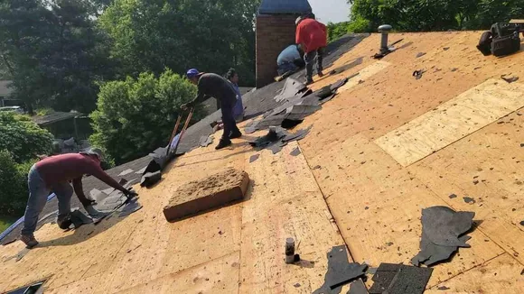
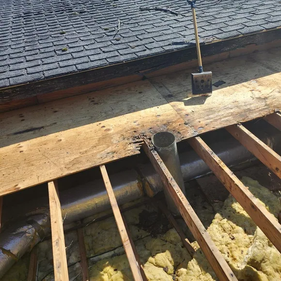


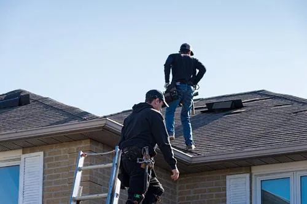
Compare finishes in the same room, side by side.


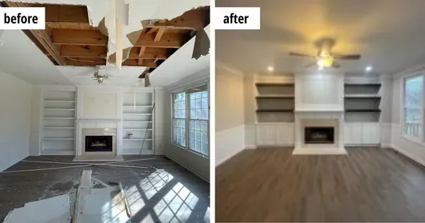
Leaks and standing water can affect finished rooms, utility spaces, and the materials beneath a floor.
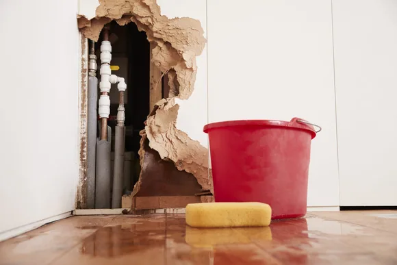
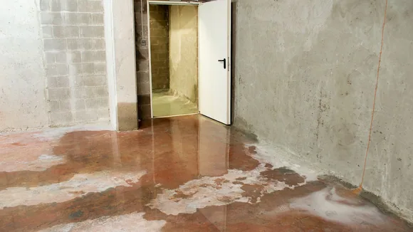
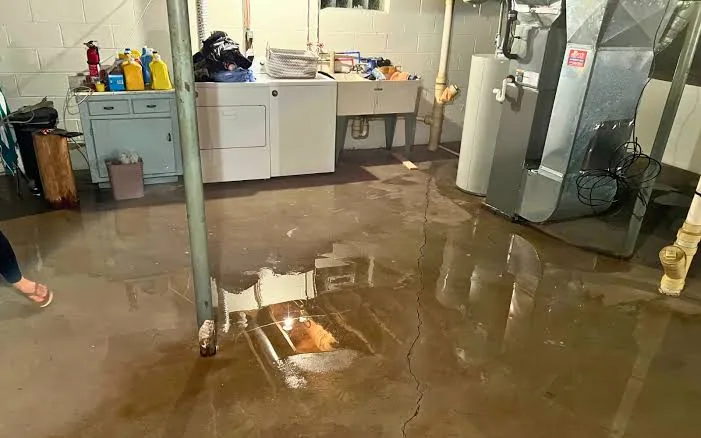


Water extraction and selective removal give access to affected surfaces.
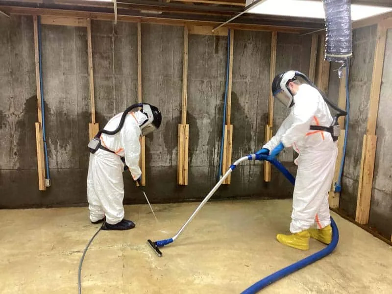


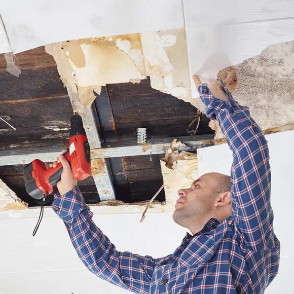
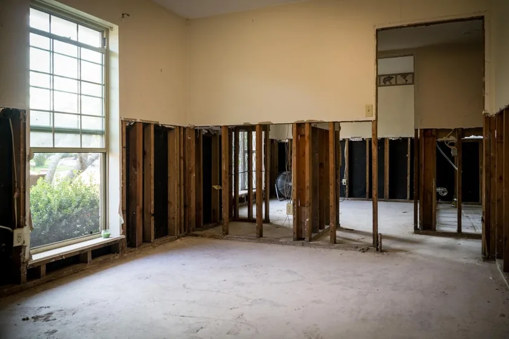
Meters and thermal images help locate areas for closer inspection. Technicians record readings to track drying.
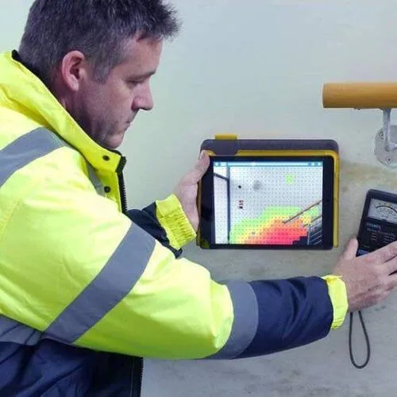
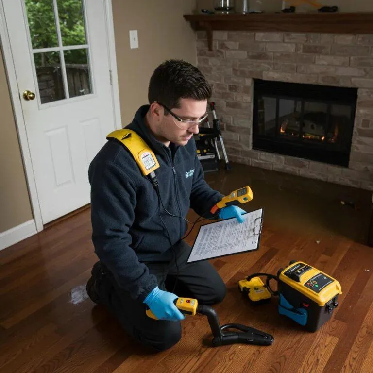
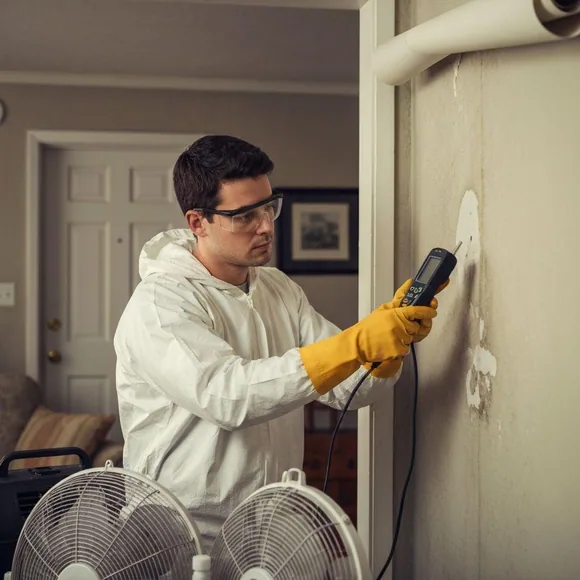
Air movers circulate air at wet surfaces. Dehumidifiers collect moisture from the air.

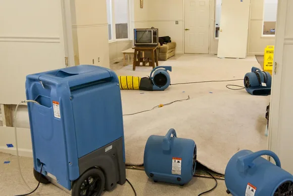

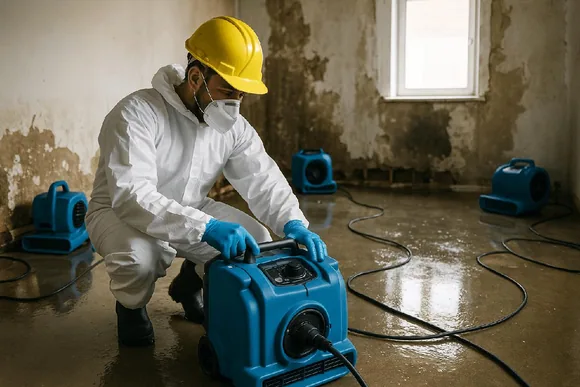
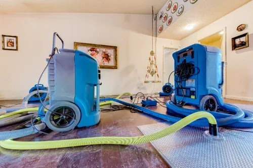
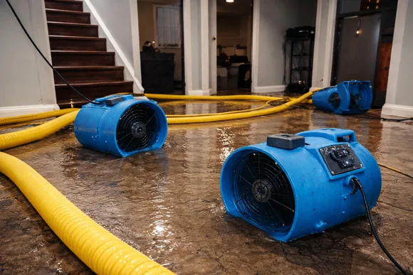
Equipment placement varies with the room layout and the materials opened during cleanup.


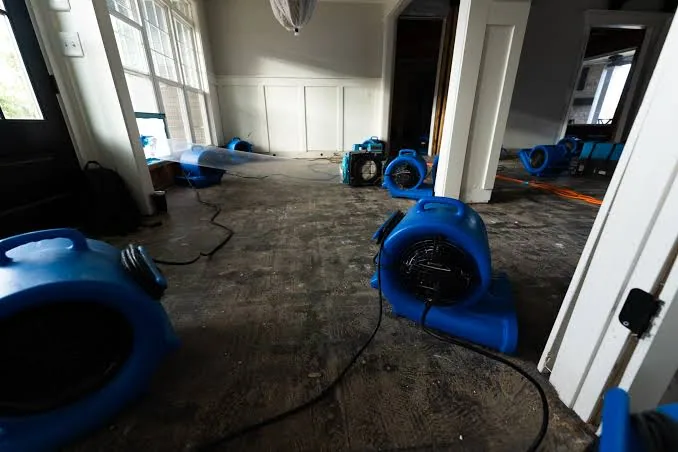
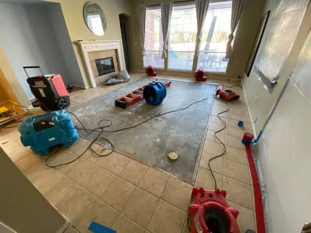


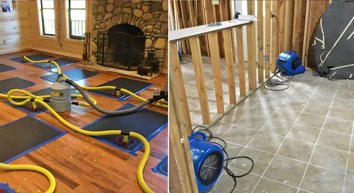